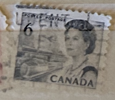
| SOURCE | TITLE| IMAGE MATCH | click to source page |
| eBay | CANADA, Queen Elizabeth II Blue - 6 Cent Stamp | eBay |  |
| eBay | CANADA 454 - Centennial "Dog Sled Team" 1967 DF-DEX Paper (pf57333) | eBay | 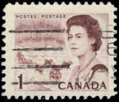 |
| Colnect | Stamp: QE II, oil derrick and combine harvester (Canada(Centennial Definitives 1967-73 - Low Values) Mi:CA 400AyIIV,Sn:CA 456pxx,Sg:CA 581q 📮 | 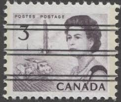 |
| Bob Shop | Canada - 1967 CANADA THE 100TH ANNIVERSARY CELEBRATION for sale in Cape Town (ID:670668664) | 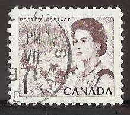 |
| eBay UK | Canada - 1967 - The 100th Anniversary Celebration - Queen Elizabeth, Northern Li | eBay UK | 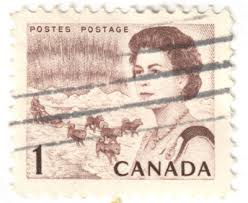 |
| zeboose.com | Canada 1967 (Variety) 5c Queen Elizabeth II with one broad phosphor ba – ZEBOOSE.COM | 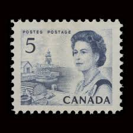 |
| eBay | CA263) 1967 CANADA 5c Blue QEII ow583 | eBay Australia | 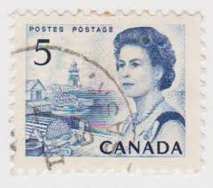 |
| Deveney Stamps | Canada #460iii - Mint Miss-Perf - Deveney Stamps | 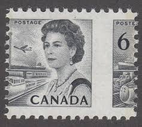 |
| TouchStamps | Stamp: QE II, transport (Canada 1970) - TouchStamps | 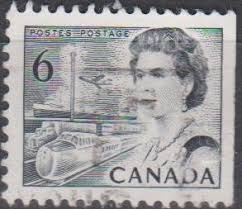 |
| stampphenom.com | Canada 1967 Queen Elizabeth II, northern lights and dog sled team – StampPhenom | 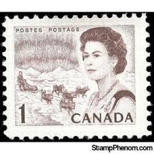 |
| Todocolección | canada 1987 hoja bloque ** mnh - 117 - Buy Antique stamps of Canada on todocoleccion | 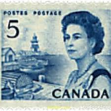 |
| The Itty Bitty Stamp Company | Canada Scott # 460e Mint Never Hinged Complete Booklet – The Itty Bitty Stamp Company |  |
| eBay | CANADA STAMP MNH [SALE] [Choose 10pc of MINT is $3.5] unused WM7272 | eBay | 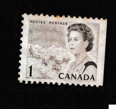 |
| eBay | Canada - 1970 Centenary Celebration | eBay |  |
| eBay | CANADA STAMP MNH Commemorative MINT unused WM0288 | eBay | 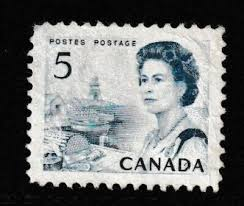 |
| eBay | Canada, 1 cent Stamp, # 454 Northern Lights, 1967 Used Centennial TK362* | eBay |  |
| eBay | Canada 1c Postage Stamp Sled Dogs | eBay |  |
| eBay | Canada Scott #468 5c Stamp - 1967 Queen Elizabeth QEII (Mint) X40 | eBay |  |
| Mystic Stamp | 466//68B - 1967-70 Canada - Mystic Stamp Company | 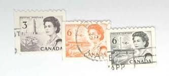 |
| eBay | VINTAGE 1967 Canada Centennial Commemorative Stamp Box Queen Elizabeth II | eBay | 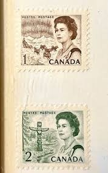 |
| eBay | Vintage Postcard. Issued 1973 Two Bears Storyland Valley Zoo Edmonton AB PC107 | eBay | 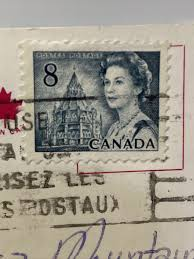 |
| eBay | Canada Stamp Centennial Definitive circa 1967 Northern Region 1 Cent | eBay | 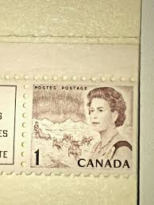 |
| eBay | Canada - 1970 - 6¢ - Queen Elizabeth II - Centenary Celebration - #17834 | eBay | 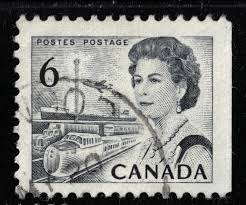 |
| eBay | Canada Scott 468B Coil Pair MNH - 1967-72 Centennial Issue | eBay | 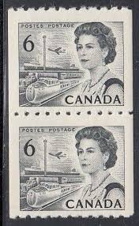 |
| eBay | Canada - 1967 - The 100th Anniversary Celebration - 5 C - Used - #1 | eBay | 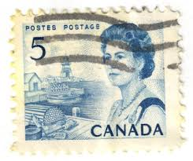 |
| Vista Stamps | Buy Canada #543aii - Queen Elizabeth II (1971) 1 x 1¢, 1 x 3¢, 3 x 7¢ - Booklet pane of 5 stamps (#454eiii, 456aiii, 543xii) (BK66, 68), MF, PVA | Vista Stamps | 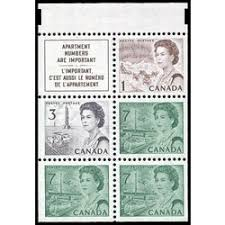 |
| eBay | 1971 Canada 5 Cent Centennial Stamp | eBay | 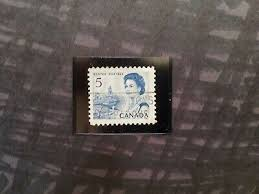 |
| eBay | CANADA 1967 QUEEN ELIZABETH FV FACE 1 CENT 100% OFF CENTER SHIFTED STAMP ERROR | eBay | 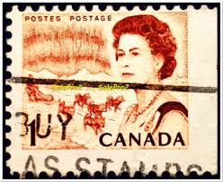 |
| Colnect | Stamp: Queen Elizabeth II, northern lights and dog sled team (Canada(Centennial Definitives 1967-73 - Low Values) Sn:CA 454pi,Yt:CA 378b,Sg:CA 579pa 📮 | 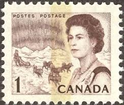 |
| eBay | Stamps 1971 Canada Queen Elizabeth ll Lot of 3 (on envelope paper) | eBay |  |
| eBay | 454 VF CV $15.00 Canada Mint | eBay | 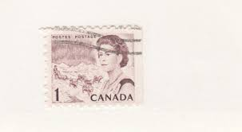 |
| Etsy | This item is unavailable - Etsy | 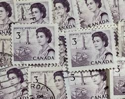 |
| eBay | 2x CANADA 1967 CANADIAN QUEEN ELIZABETH FACE 10 CENT MNH STAMP LOT MARGIN ERROR | eBay | 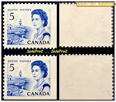 |
| eBay | Canada #468i MNH 1967 5c QEII Centennial Coil Atlantic Fishing Port LF/fl DEX | eBay | 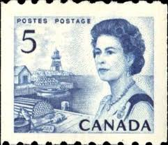 |
| eBay | Canada Scott 466 Coil MNH - 1967-72 Centennial Issue | eBay | 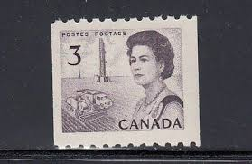 |
| eBay | CANADA 1970 QUEEN ELIZABETH FACE 24 CENT STAMP CORNER BLOCK MIDDLE TAGGED ERROR | eBay | 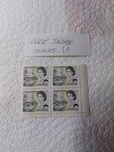 |
| eBay | Canada Scott #466 | Mint H | VF Very Fine | eBay | 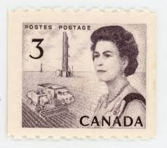 |
| eBay | Moraine Lake Postcard Alberta, Canadian Rockies Valley of the Ten Peaks VTG | eBay | 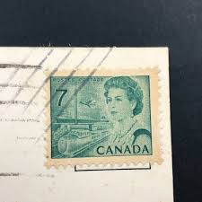 |
| eBay | 1912 CHINA TOBACCO Cigarette TAX REVENUE Fiscal 2$ + HongKong Canada RARE STAMPS | eBay | 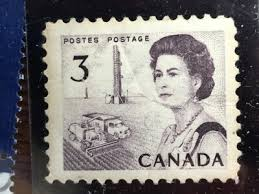 |
| eBay | Canada Scott #468 5c Stamp Pair - 1967 Queen Elizabeth QEII (Mint) X40 | eBay | 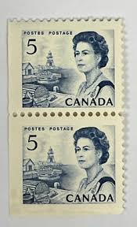 |
| eBay | CANADA 1967 QUEEN ELIZABETH II MINT FACE 50 CENT MNH STAMP SET S/S SHIFTED ERROR | eBay | 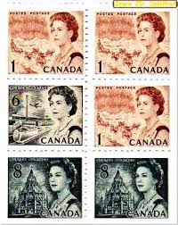 |
| eBay | Canada #458 MNH | eBay | 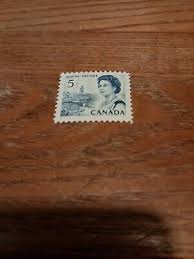 |
| eBay | Canada 3 Cent Stamp 1967 Scott 466 Queen Elizabeth II MNH Full Gum Unused | eBay |  |
| eBay | Canada Scott 460 LL Pl #3 MNH - 1967-72 Centennial Issue | eBay | 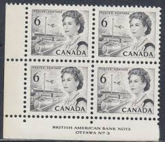 |
| eBay | Canada #460Pii Very Fine Never Hinged Incredible Perforation Shift Variety | eBay | 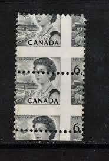 |
| eBay | CANADA Stamp ~ Animals Queen Misc ~ Multiple Denominations ~ Used Lot of 30 | eBay | 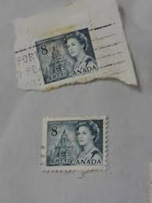 |
| eBay | CAB-265) 1953 Canada 1c brown QEII stamp (JO) | eBay | 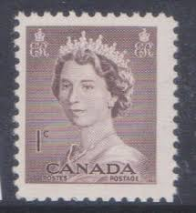 |
| eBay | Travelstamps: Canada Stamps Scott #458 - 5c Elizabeth II Mint MNH OG | eBay | 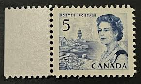 |
| eBay | Canada Stamps Scott #454 & 460, Mint Never Hinged, Booklet Pane | eBay | 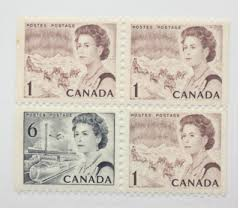 |
| eBay | CANADIAN FORCES POST OFFICE CANCEL "CFPO-108" | eBay | 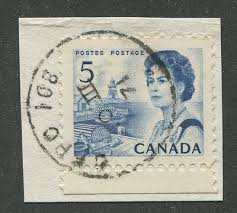 |
| eBay | CENTENNIAL #468i- 5¢ ** AWESOME IMAGE PRINT GUM SIDE ** SF (aka LF) STRIP 4 SUP | eBay |  |
| eBay | Canada Scott 454piv LL Cnr Blk MNH - 1967-72 Centennial Issue | eBay | 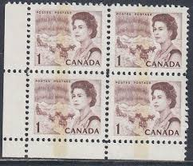 |
| eBay UK | CANADA POSTES POSTAGE 5 QUEEN ELIZABETH II USED POST STAMP | eBay UK | 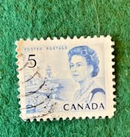 |
| eBay | Canada Scott 543 LR Pl #2 MNH - 1967-72 Centennial Issue | eBay | 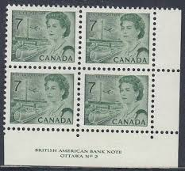 |
| eBay | Canada 1967-70 QE Definitives 2c,3c,6c One Bar Tag Errors MNH | eBay |  |
| eBay | CANADA SCOTT # 468 PAIR, MINT, OG, H/NH, GREAT PRICE! | eBay | 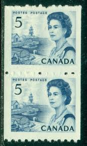 |
| eBay | CANADA SCOTT # 468B STRIP OF 4, MINT, OG, NH, GREAT PRICE! | eBay |  |
| eBay | Canada #468i MNH 1967 5c QEII Centennial Coil Atlantic Fishing Port LF/fl DEX | eBay | 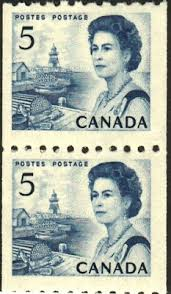 |
| eBay | MNH UNUSED CANADA Canadian Queen Elizabeth II postage stamp blocks MNH C | eBay |  |
| eBay | CANADA SCOTT # 466 PAIR, MINT, OG, TOP STAMP LH, BOTTOM STAMP NH, GREAT PRICE! | eBay |  |